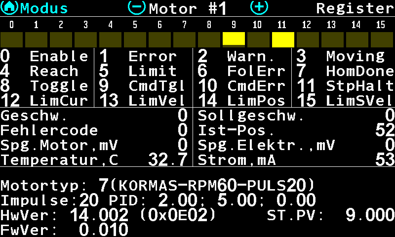
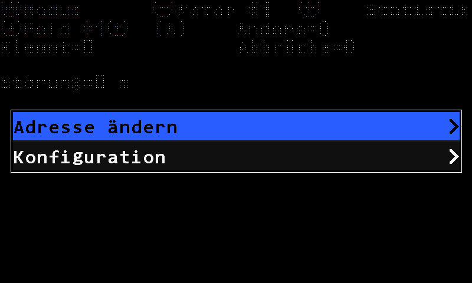

Motorcontroller konfigurieren
Geben Sie einem Dosiermotor-Controller seine Adresse, wählen Sie die Controllerart und stellen Sie seine Parameter ein.
Die Controller, die die Dosiermotoren ansteuern, werden nicht unter „Sensorkonfiguration“ adressiert. Sie haben einen eigenen Zugang, eine eigene Auswahl der Controllerart und eigene Parameter.
Das Menü der Motorcontroller öffnen
Heben Sie die Ebene auf „Service“ an (Agronomen-Ebene aktivieren – wählen Sie „Service“).
Drücken Sie „MENU“ → „Service“ → „Elektromotoren“. Der Motorenbildschirm öffnet sich.

Der Motorenbildschirm von Motor 1, Seite „Register“. Drücken Sie auf dem Motorenbildschirm „MENU“. Es erscheinen zwei Punkte, beide auf der Ebene „Agronom“: „Adresse ändern“ und „Konfiguration“.

Das Menü des Motorenbildschirms.
Bei einem Panel für ein System ohne Elektromotoren fehlt „Elektromotoren“ im Menü „Service“ ganz.
Adresse ändern
Wählen Sie „Adresse ändern“ und drücken Sie „MENU“. Drei Punkte öffnen sich.
„Motoradresse“ – die Adresse, auf der der Controller jetzt antwortet. Lassen Sie sie, wie sie vorgefunden wurde.
„Neue Adresse“ – die Adresse, die er annehmen soll. Entnehmen Sie sie dem Datenblatt des Systems; die Werte sind in dieser Anleitung nicht abgedruckt.
Wählen Sie „Einstellen“ und drücken Sie „MENU“, um sie zu schreiben.
Controllerart wählen
„Konfiguration“ öffnet die Konfiguration des Controllers. Vier Arten werden unterstützt, angeboten nach Nummer:
| Art | Was es ist |
|---|---|
| „1)Universal“ | Der Universal-Controller: zwei Gleichstromkanäle oder ein Schrittmotorkanal auf derselben Platine. |
| „2)DC-Motor“ | Ein Gleichstrommotor-Controller. |
| „3)Schrittmotor fw0.006+“ | Ein Schrittmotor-Controller, Firmware 0.006 und neuer. |
| „4)BGxxCI“ | Ein BG45CI-Motor mit eingebautem Controller, auf der älteren Platine. |
Das Panel liest die Art vom Controller zurück und öffnet mit der Art, die antwortet. Eine andere Art von Hand zu wählen, dient dazu, eine Ersatzplatine einzurichten – nicht dazu, zu ändern, was ein Motor ist.
Parameter einstellen
Jedes Konfigurationsmenü endet mit „Einstellen“, und „Einstellen“ trägt einen eigenen Wert: die Adressgruppe, 0 bis 3. Nichts erreicht den Controller, bevor „Einstellen“ bestätigt wird – die Punkte darüber ändern die Zahlen, die das Panel hält, nicht die, mit denen der Controller arbeitet.
| Art | Was eingestellt wird |
|---|---|
| Schrittmotor | „Impulse“ 1 … 8192 – die Impulse einer Umdrehung der Motorwelle; „Motortyp“ aus einer Liste; „Einstellen“. |
| BGxxCI | „Impulse“ 1 … 8192; „Einstellen“. Sonst nichts – den Rest trägt der Controller selbst. |
| DC-Motor | „Impulse“, „Motortyp“, die Reglerglieder „PID kP“, „PID kI“, „PID kD“ (0 … 65535, als Hundertstel gelesen), „TURBINA“ 0/1 und zwei Paare aus Drehzahl und Zeit „TIME1“ / „SPEED1“, „TIME2“ / „SPEED2“; „Einstellen“. |
| Universal | Der größte Satz, in drei Menüs: „Betriebsmodus“, „Eingänge einrichten“ und „Parameter“. |
Das Menü „Parameter“ des Universal-Controllers:
| Parameter | Bereich |
|---|---|
| „Motortyp“ | 0 … 255, aus der eigenen Tabelle des Controllers |
| „Impulse“ | 1 … 8192 je Wellenumdrehung |
| „Beschleunigung,mS“ / „Verzögerung,mS“ | 50 … 65535 – die Rampe hinauf und hinab |
| „Minimum, U/min“ / „Maximum, U/min“ | 0 … 65535 – das Drehzahlfenster der Welle |
| „PID kP“, „PID kI“, „PID kD“ | 0 … 65535, Hundertstel |
| „!! Temp,*C“ | 0 … 200 – die Temperatur, bei der der Controller Alarm gibt |
| „I_peak,A“ / „I_peak,mS“ | der Spitzenstrom und wie lange er fließen darf |
| „I_push,A“ / „I_push,Sec“ | der Anlaufstrom und seine Dauer |
| „I_hilo,A“ / „I_hilo,Sec“ | die Schwelle des Dauerstroms und ihre Zeit |
| „Einstellen“ | schreibt alles, in der gewählten Adressgruppe |
Die Punkte „PID kP“, „PID kI“, „PID kD“, „TURBINA“, „TIME1“, „SPEED1“, „TIME2“, „SPEED2“, „!! Temp,*C“, „I_peak,A“, „I_push,A“, „I_hilo,A“ und ihre Zeitpartner lauten in jeder Sprache des Panels gleich.
Was der Controller meldet, lesen Sie so: Diagnose der Motorcontroller.
Ihre Maschine tut etwas, das diese Seite nicht beantwortet? Schreiben Sie an support@agriwelt.com — es antwortet ein Ingenieur.